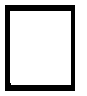
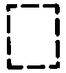

Components
Components:

A solid border line means the entire component is shown.
Components:

A broken border line indicates that only part of the component is shown.
Components:
The name of the component appears next to its upper right corner followed by notes about its function.